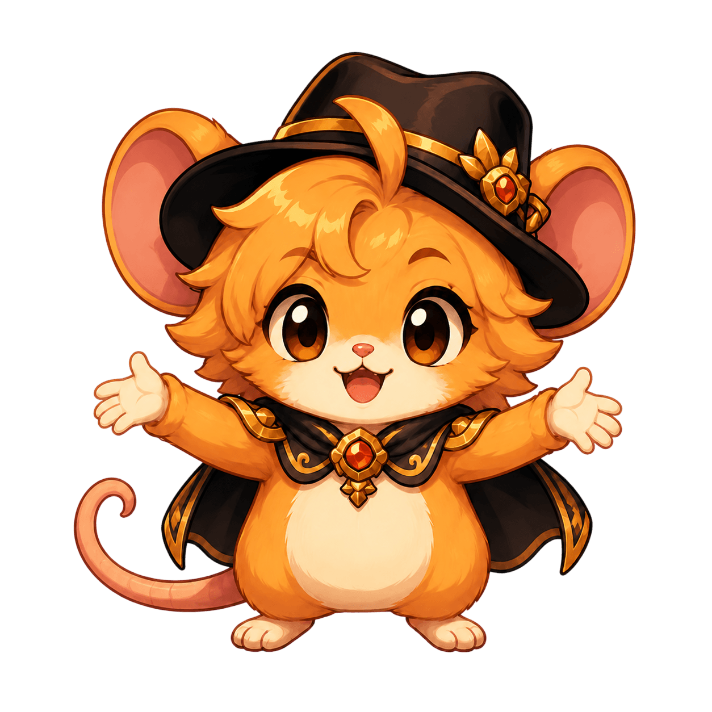
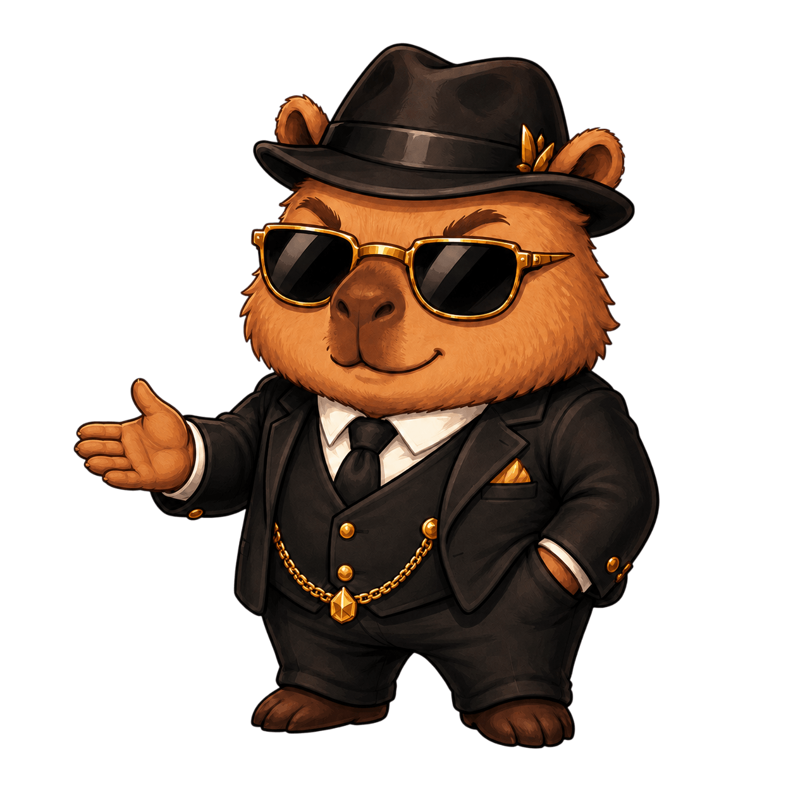

Salão de Avalon
Bem-vindo ao Portal Avalon
O ponto de encontro dos guardiões: registros, evolução, eventos e a Liga dos guardiões.

Registro atual da Raid
Dados atuais da guilda
Carregando os registros mais recentes da Avalon...
Propósito do Salão
Todo esforço merece ser visto.
O Hall da Evolução transforma os registros de batalha em reconhecimento. Dano importa, presença importa, mas a evolução de cada guardião também precisa ter seu lugar.
Este portal também guardará eventos, memórias da guilda, torneios internos e novas histórias da Avalon.